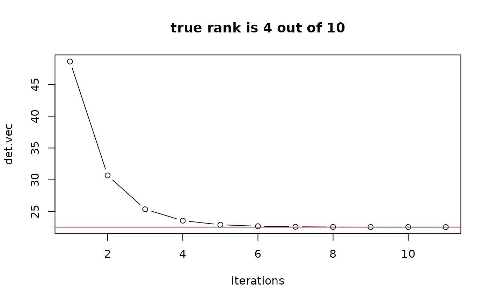

When a given square matrix \(A\) is rank deficient, determinant is zero. Still, we can compute the pseudo-determinant by multiplying all non-zero eigenvalues. Since thresholding to determine near-zero eigenvalues is subjective, we implemented the function as of original limit problem. When matrix is non-singular, it coincides with traditional determinant.
pdeterminant(A)a square matrix whose pseudo-determinant be computed.
a scalar value for computed pseudo-determinant.
Holbrook A (2018). “Differentiating the Pseudo Determinant.” Linear Algebra and its Applications, 548, 293--304.
## show the convergence of pseudo-determinant
# settings
n = 10
A = cov(matrix(rnorm(5*n),ncol=n)) # (n x n) matrix
k = as.double(Matrix::rankMatrix(A)) # rank of A
# iterative computation
ntry = 11
del.vec = exp(-(1:ntry))
det.vec = rep(0,ntry)
for (i in 1:ntry){
del = del.vec[i]
det.vec[i] = det(A+del*diag(n))/(del^(n-k))
}
# visualize the results
opar <- par(no.readonly=TRUE)
plot(1:ntry, det.vec, main=paste("true rank is ",k," out of ",n,sep=""),"b", xlab="iterations")
abline(h=pdeterminant(A),col="red",lwd=1.2)

par(opar)